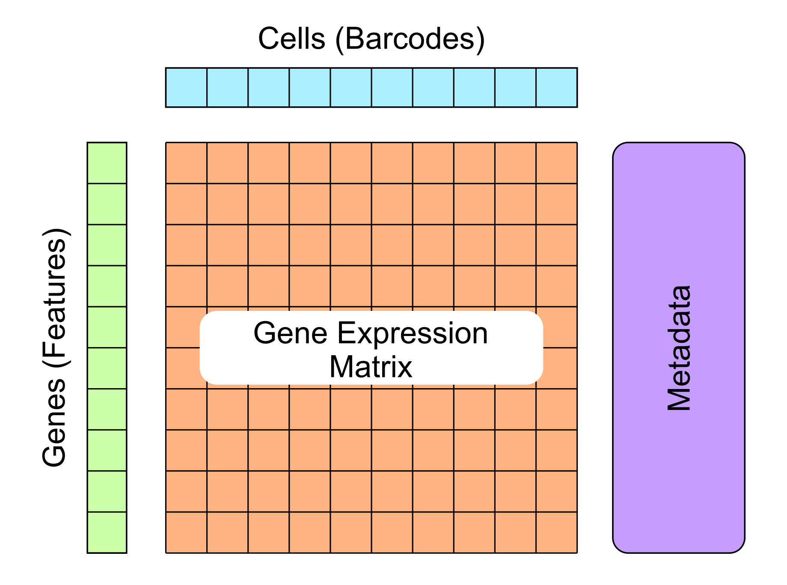
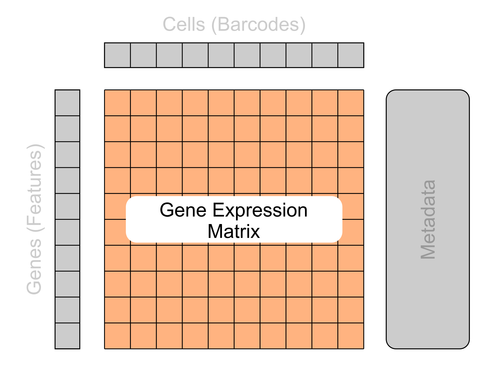
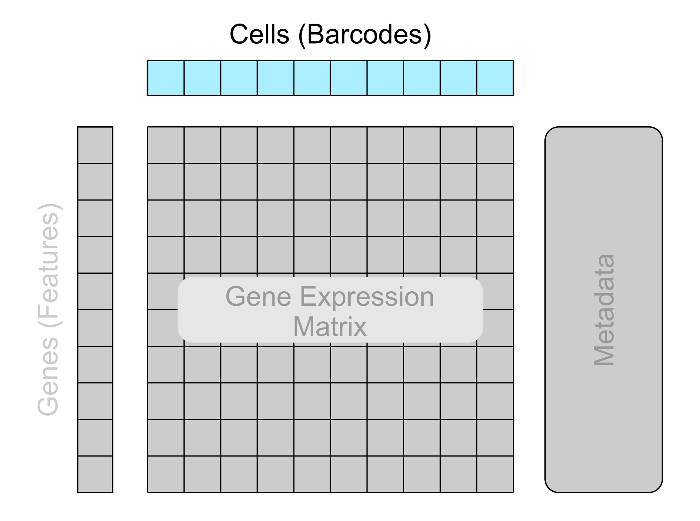
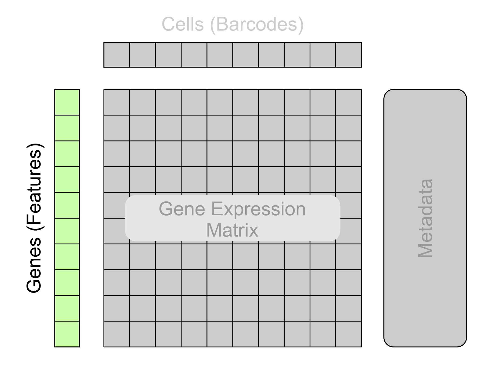
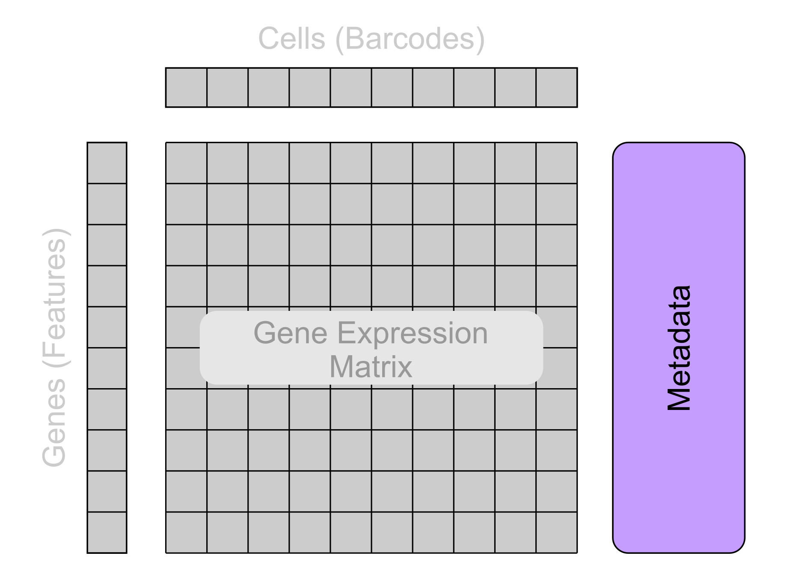
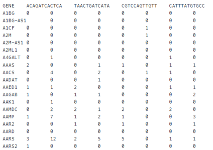
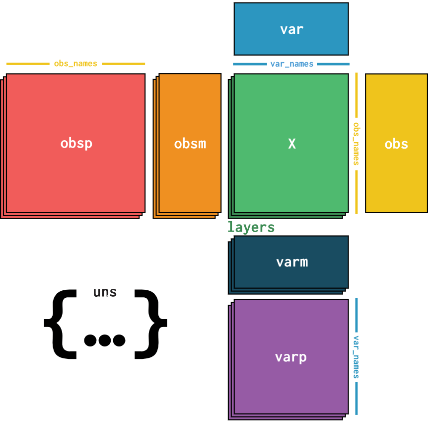
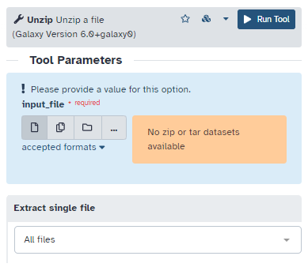

Single-cell Formats and Resources
Contributors
Questions
What does single-cell data look like?
What are the common single-cell formats?
Where can public single-cell data be found?
Objectives
Learn the basic structure of single-cell data
Be able to recognise different types of single-cell metadata
Learn the common data formats used for storing single-cell data
Become familiar with some popular sources for public single-cell data
Requirements
Breakdown of single-cell data
.pull-center[
How is single-cell data structured?
]
Overview of single-cell data
.pull-left[
- Single-cell data consists of 4 main components:
- Gene expression matrix
- Cell metadata (barcodes)
-
Gene metadata (features)
- Unstructured metadata
]
.pull-right[

]
Speaker Notes
Single-cell data consists of 4 main components:
- gene expression data
- metadata about each cell
- metadata about each gene
- unstructured metadata about the data collected
All complex single-cell data formats will contain these 4 main sections, it’s important to understand what these components are, how to identify them, and their importance in single-cell analysis
Gene expression matrix (Matrix)
.pull-left[
- 2D matrix of expression values
- Rows represent genes
- Columns represent cells
- Values represent gene expression per cell
- Can be in a full or sparse matrix form
]
.pull-right[

]
Speaker Notes
The core component of single-cell data is the gene expression matrix. This is a 2D matrix representing the gene expression values for each gene in the sequenced cells.
Typically each row of the matrix represents the genes and the columns represent the cells. However, it is important to note that this is not always the case and some matrices may need to be transposed before further processing.
The matrix can come in two different forms: full or sparse.
Full matrices act as one large table where every entry contains a value, including genes that were not sequenced (in which case their value will be 0). This is the simplest format but can be inefficient to store as many of the values in the matrix are redundant.
A more compact method to store these values is with a sparse matrix. This is a compressed representation of the matrix that removes all values that contain no useful information whilst keeping track of the overall structure of the matrix.
Cell metadata (Barcodes)
.pull-left[
-
Cell identifiers/barcodes
-
Patient/sample metadata
-
Quality control metrics
- Example barcodes:
- AAACCTGAGTCT
- TGCATTAGGGA
- CCGTTGACCTAC-0
- GATCGATCGTCA-0
]
.pull-right[

]
Speaker Notes
The first section of metadata that will be explored is the cell metadata, commonly referred to as barcodes when stored in a file. This contains metadata on each cell. This metadata includes the cell identifiers/barcodes, data on the origin of each cell, and quality control metrics generated with further analysis tools.
Cell barcodes consist of the 4 nucleotide letters and occasionally suffixed with a dash and a number (which has various meanings). If a file contains a column containing data in this format, then you are likely looking at cell metadata!
Gene metadata (Features)
.pull-left[
-
Gene identifiers/Ensembl IDs
-
Expression metrics
-
Quality control metrics
- Example gene identifiers:
| Gene Symbol | Ensembl ID |
|---|---|
| AIF1 | ENSG00000204472 |
| ACOXL-AS1 | ENSG00000204581 |
| RPS27P25 | ENSG00000233247 |
| AGR2 | ENSG00000106541 |
]
.pull-right[

]
Speaker Notes
The next section of metadata to explore is the gene metadata. Commonly referred to as features when stored in a file. This contains metadata about each gene that was sequenced. This metadata includes gene identifiers/ensembl IDs, expression metrics and quality control metrics, both generated with additional analysis tools.
Gene identifiers typically consist of a sequence of letters and numbers. If a column in your file contains these types of values then your likely looking at the gene metadata! (If you’re unsure, performing an internet search on one of the potential gene names will likely reveal whether that string represents a gene)
Unstructured metadata
.pull-left[
-
Batch/replicate information
-
Sequencing platform
-
Data / time
-
Tissue source
- Example sequencing platforms:
-
10X Chromium
-
Smart-Seq
-
inDrop
-
Cell-Seq
-
]
.pull-right[

]
Speaker Notes
The last section of metadata to explore is the unstructured metadata. This is data that is not associated with an individual cell or gene but instead the data as a whole. Because of this, the metadata contained here can vary, but may include information such as when the cells were sequenced, what sequencing platform was used, the source of the cell samples, etc.
Common single-cell data formats
.pull-center[
What are the different formats for storing single-cell data?
]
Overview of the most common single-cell data formats
-
Tabular
-
Matrix Market (MTX)
-
AnnData
-
Loom
-
Seurat
-
Single Cell Experiment (SCE)
-
CellDataSet (CDS)
Basic single-cell formats
Speaker Notes
The following formats are fairly basic and only store sections of single-cell data (expression matrix, metadata, etc.)
Tabular
.pull-left[
-
Most basic format
-
Stores all data in a single file
-
Contains:
- Gene identifiers
- Cell identifiers
- Expression values
- File extensions:
- .csv
- .tsv
- .txt
]
.pull-right[

]
Speaker Notes
Tabular files are the most basic format for storing single-cell data. This format stores: expression matrix, cell identifiers, and gene identifiers in a single file. The data is separated with either commas (for .csv) or tabs (for .tsv/Tabular).
Whilst being simplistic and easy to read, the tabular format does have limitations, mainly its inability to store any additional metadata outside of the gene or cell identifiers.
Matrix Market (MTX)
.pull-left[
-
Sparse matrix format
-
More compact way to store larger matrices with many 0 values
-
Doesn’t include any metadata
- File extensions:
- .mtx
- .mm
]
.pull-right[
]
Speaker Notes
The Matrix Market format (MTX) is common for storing the gene expression matrix. This stores the expression data in the more compressed sparse matrix form. This type of file will likely be found alongside two additional files for the cell metadata (barcodes) and the gene metadata (features).
Complex single-cell formats
Speaker Notes
The following formats/objects are more complex and can all support storing all 4 core sections of single-cell data:
- Gene expression matrix
- Cell metadata
- Gene metadata
- Unstructured metadata
AnnData
.pull-left[
-
Python-based single-cell format
-
Cell metadata (obs)
-
Gene metadata (var)
- File extensions:
- .h5ad
]
.pull-right[

]
Speaker Notes
The AnnData format is a Python-based single-cell object built upon the HDF5 format. The primary library for performing single-cell analysis with AnnData objects is Scanpy.
It’s important to note that AnnData does not support sparse matrices, therefore large single-cell files with many expression values of zero will not be very efficient to store in memory.
Supported languages: Python
Supported packages: anndata
Loom
.pull-left[
-
Based on HDF5 standard
-
Efficient for large datasets
-
Supports sparse matrices and hierarchical data
-
Graph objects for graphs and clusters
- File extensions:
- .loom
]
.pull-right[
]
Speaker Notes
Loom is another format based on HDF5. Loom objects are supported in various different programming languages and supports sparse matrices making it efficient for large data files.
Supported languages:
- Python
- R
- MATLAB
- Mathematica
- C
- C++
- Java
- Ruby
Supported packages:
- LoomPy (Python)
- LoomR (R)
Seurat
.pull-left[
-
R-based format used by the Seurat package
-
Allows for easy integration with the suite of Seurat tools
- File extensions:
- .rds
- .rda
- .rdata
]
.pull-right[
]
Speaker Notes
Seurat is an R-based format that is commonly used with the Seurat package (the naming convention is a bit confusing!). This is a software package that contains various processing and analysis tools for single-cell data.
Supported languages: R
Supported packages: seurat
Single Cell Experiment (SCE)
.pull-left[
-
R-based format provided by the Bioconductor package SingleCellExperiment
-
Integrates well with the Bioconductor ecosystem
- File extensions:
- .rds
- .rda
- .rdata
]
.pull-right[
]
Speaker Notes
Single Cell Experiment (SCE) is another R-based format that is widely used within the Bioconductor ecosystem of tools for both processing and analysis of single-cell data.
Supported languages: R
Supported packages: SingleCellExperiment
CellDataSet (CDS)
.pull-left[
-
R-based format used by the Monocle package
-
Integrates well with the Monocle package for various types of analysis
- File extensions:
- .rds
- .rda
- .rdata
]
.pull-right[
]
Speaker Notes
CellDataSet (CDS) is the last of the R-based formats that is commonly used within the Monocle package which contains tools for performing various types of analysis.
Supported languages: R
Supported packages: monocle
Sources of single-cell data
.pull-center[
Where are some sources to acquire public single-cell data?
]
Data sources
| Repository | Link to resource |
|---|---|
| NCBI | https://www.ncbi.nlm.nih.gov/ |
| Human Cell Atlas: Data Explorer | https://explore.data.humancellatlas.org/projects |
| CellXGene Collection | https://cellxgene.cziscience.com/datasets |
| Single Cell Portal | https://singlecell.broadinstitute.org/single_cell |
| EBI Single Cell Expression Atlas | https://www.ebi.ac.uk/gxa/sc/home |
Speaker Notes
There are many publicly available sources for reusable single-cell data. The table shows some common sources for acquiring this data.
This table is not extensive and there are many other resources available!
Compressed Files
.pull-left[
-
Some files may be compressed/archived
-
Requires decompression/extraction to process the data
-
May receive errors if left compressed
- File extensions:
- .zip
- .gz
- .tar
- .tar.gz
]
.pull-right[

]
Speaker Notes
It is common for single-cell data to be stored in a compressed format in order to reduce filesizes and make transferring the data simpler. It is important to recognise when a file is compressed as using compressed data in downstream tools may cause errors to occur.
There are two forms of compression that are common:
- Individual file compression
- Archive of multiple files
Individual files are typically compressed with zip (.zip) or gzip (.gz) and should be unzipped prior to processing.
When data is stored in multiple files/folders they may be archived into a single file (commonly called a tarball), this is done with the TAR tool (.tar). Like individual file compression, you will need to untar/extract the .tar file before further processing.
Finally, it is also common for multiple files/folders to both be compressed and archived into a single file, this is indicated with the extension .tar.gz. In this case the data will need to be both unzipped and then extracted before the data is available in it’s original form.
Key Points
- Single-cell data consists of four main sections
- Single-cell data can come in a variety of formats
- Different data formats are required for different languages and packages
- There are various public single-cell atlases that consist of useful data
Thank you!
This material is the result of a collaborative work. Thanks to the Galaxy Training Network and all the contributors! Tutorial Content is licensed under
Creative Commons Attribution 4.0 International License.
Tutorial Content is licensed under
Creative Commons Attribution 4.0 International License.